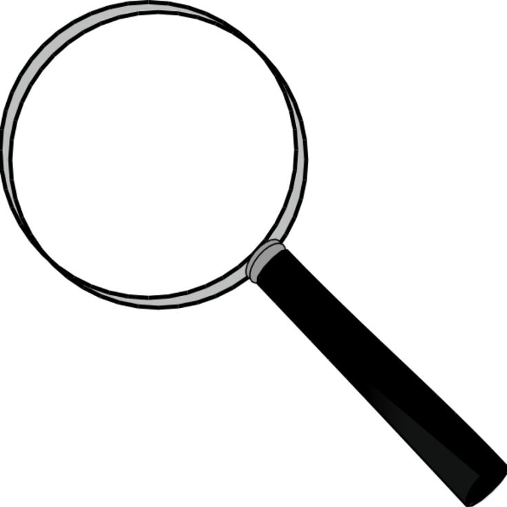

There are many ways to construct knowledge.
Subjective experience
Intuition and reason
Empirical research and measurement

Subjective experience refers to the thoughts and experiences an individual has.
Intuition and reason rely on logic and abstract thinking to understand the world.
Empiricism is the idea that knowledge comes primarily from direct sensory experience and observation.
üí≠ Check-in
What’s your intuitive theory of how science works (or should work)?
Historically, scientists and philosophers of science have made different arguments about how science works, both descriptively and prescriptively.
Beyond falsification
One goal of science is to produce explanations of natural phenomena.
üí≠ Check-in
What do you think makes a good explanation?
üí≠ Check-in
Does being able to predict something mean we understand it?
Any given empirical claim can be evaluated according to several validities.
Here, we’ll focus on these validities with respect to CSS specifically.
Construct validity
Are we measuring what we think we’re measuring?
Internal validity
Can we establish causal relationships?
Statistical validity
Are our analytical methods appropriate?
External validity
Do our findings generalize beyond our sample?
Construct validity refers to how well a variable is operationalized.
Many variables are somewhat abstract: how do we measure them?
Examples of hard constructs to operationalize:
Key questions:
üí≠ Check-in
With a partner, choose one of these constructs. How might you operationalize it? What are limitations to this approach?
Internal validity is an indication of a study’s ability to eliminate alternative explanations for the effect of interest.
üí≠ Check-in
With a partner, think of some observational CSS studies you’ve read about. What might be alternative explanations for the effect of interest?
Statistical validity is the extent to which a study’s statistical conclusions are accurate.
üí≠ Check-in
Suppose you analyze the correlation between various personality traits and hundreds of outcome measures (life satisfication, income, etc.). You find significant results for about \(5 \%\) of your analyses. What’s a potential concern here?
External validity refers to how well a given claim generalizes to the population of interest.
üí≠ Check-in
With a partner, talk about a CSS-related study you’ve read about. How well do you think the conclusions generalize from the sample (people, society, time, etc.) studied?
CSS research involves many important ethical questions.
üí≠ Key takeaway
Producing knowledge is hard, but methodological and theoretical principles can help guide us.
CSS 211 | UC San Diego